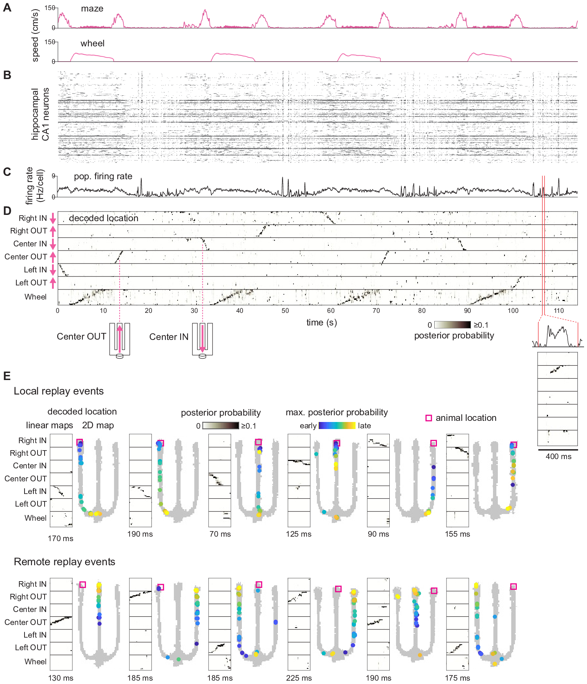
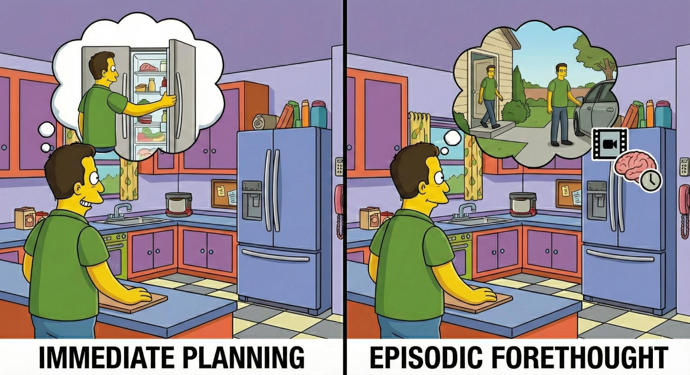

Signatures of remote planning in hippocampal replay
Longer write-up · in progress
This paper is my most recent, and also the one I've spent the most time with: years of thinking about what it means and why it matters. I'm working on a much longer write-up of it, which will be posted here. Probably too long, honestly, but I'd rather get it all out than let that thinking go to waste.
So fair warning: it will be lofty, and a lot of it is interpretation. The actual data and finding are very simple. What makes it exciting to me is the context: what has been shown before, the gap in the literature, and how this paper takes an important step toward filling it.

In one sentence
Rats replay remote locations in a way that matches thinking about distant future plans.
Background concepts
Episodic MemoryEpisodic Forethought and PlanningModel OrganismsExtracellular ElectrophysiologyPlace CellsBayesian DecodingReplayEgocentric vs Allocentric
The question
One of the major ideas about why we have episodic memory is that it's useful for planning, an idea called episodic forethought. Episodic memory lets us recall past experiences internally: a kind of mental time travel to any distant time or place we've experienced. That same ability can be turned toward the future, imagining plans by applying mental time travel to what hasn't happened yet.
